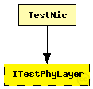
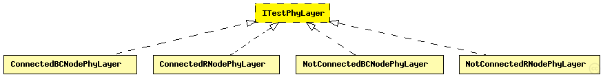

This documentation is released under the Creative Commons license
This documentation is released under the Creative Commons licenseCommon phy layer test interface.
The following diagram shows usage relationships between types. Unresolved types are missing from the diagram. Click here to see the full picture.
The following diagram shows inheritance relationships for this type. Unresolved types are missing from the diagram. Click here to see the full picture.
| Name | Type | Description |
|---|---|---|
| TestNic | compound module | (no description) |
| Name | Type | Default value | Description |
|---|---|---|---|
| usePropagationDelay | bool |
Should transmission delay be simulated? |
// Common phy layer test interface. moduleinterface ITestPhyLayer { parameters: bool usePropagationDelay; //Should transmission delay be simulated? gates: input radioIn; // for sendDirect }
This documentation is released under the Creative Commons license